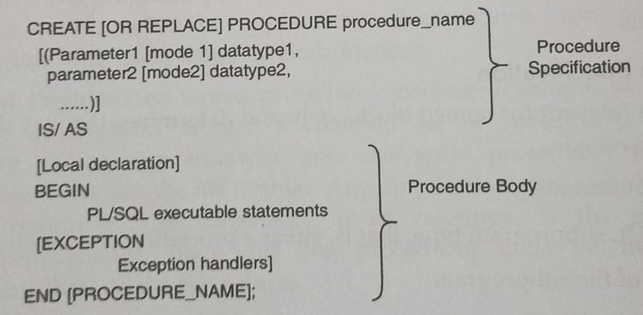

Creating a procedure
You can create a new procedure with the CREATE PROCEDURE statement, which may declare a list of parameters and must define the actions to be performed by the standard PL/SQL block The CREATE clause enables you to create stand-alone procedures, which are stored in an Oracle database
SYNTAX

In the syntax:
OR REPLACE -This option indicates that if the procedure exists it will be dropped and replaced with the new version created by the statement
procedure_name - Name of the procedure
parameter - Name of a PL/SQL variable whose value is passed to the procedure or populated by the calling environment. or both, depending on the mode being used
mode - IN
OUT
INOUT
EXAMPLE
CREATE OR REPLACE PROCEDURE P1(X NUMBER, Y NUMBER) IS
NUM NUMBER;
BEGIN
NUM:=X+Y;
DBMS_OUTPUT.PUT_LINE(NUM);
END P1;